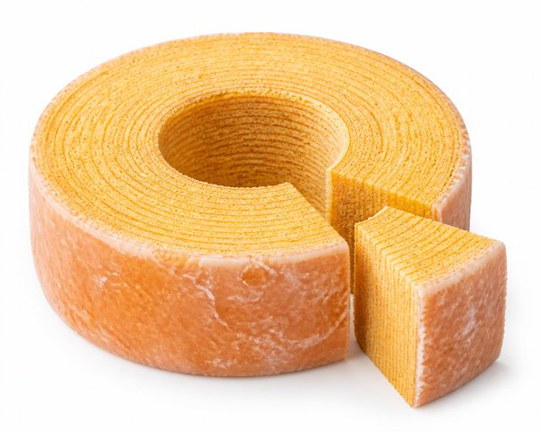
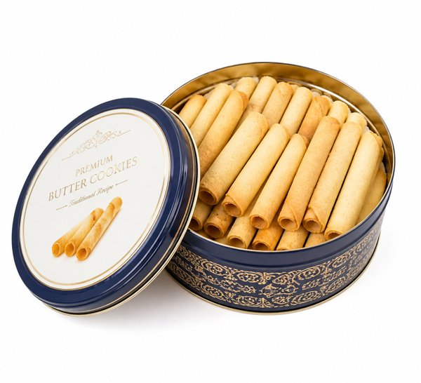
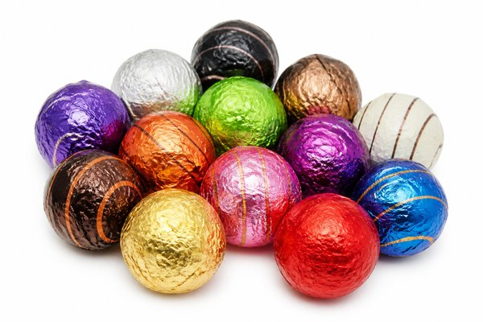
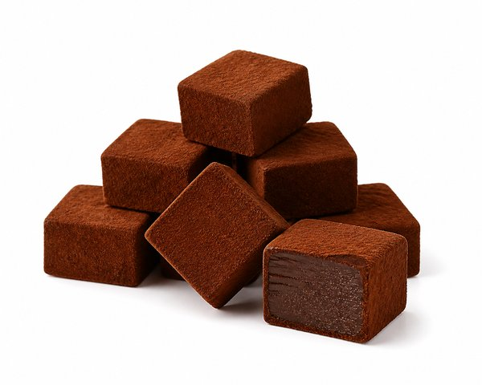
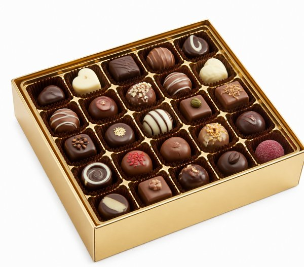
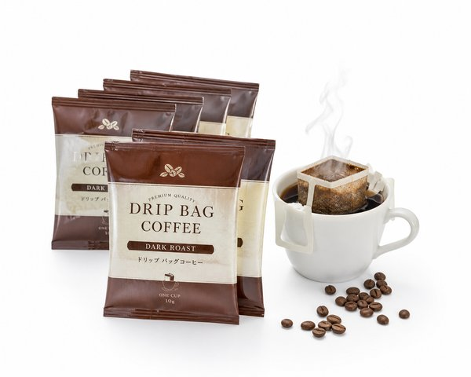
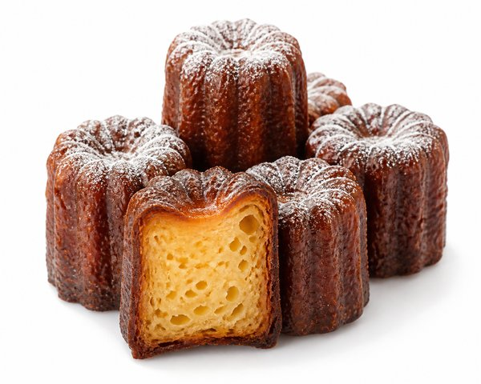

【2026年最新】冬のギフト・自分へのご褒美に！楽天で絶対外さない絶品お取り寄せスイーツ10選
寒い冬のティータイムや、頑張った自分へのご褒美、お世話になった大切な人への冬ギフト。せっかくお取り寄せするなら、一口食べて感動する本当に美味しいスイーツを選びたいですよね。
「絶対に失敗しない鉄板の手土産を知りたい」「家族みんなで贅沢なスイーツ時間を楽しみたい」という声に応えて、楽天市場の数万点から本気でおすすめできる逸品だけを厳選しました。
本記事では、グルメ好き編集部が実際に取り寄せて「これはリピート確定！」と唸った、誰に贈っても100%喜ばれる冬の絶品お取り寄せスイーツ10選をご紹介します。
- おすすめ10選 スペック・特徴比較表
- BEST 1｜ドゥーブルフロマージュ チーズケーキ 4号(直径12cm)
- BEST 2｜治一郎のバウムクーヘン ホール 高さ約8cm ギフトボックス
- BEST 3｜サンク デリス 5種44個入り 焼き菓子詰め合わせ缶
- BEST 4｜宇治抹茶生チョコレート 16粒入 和紙包装 和スイーツ
- BEST 5｜リンドール テイスティングセット ピック＆ミックス 23種23個入
- BEST 6｜生チョコレート [オーレ] 北海道特選生クリーム使用 20粒入
- BEST 7｜ゴールド コレクション 20粒入 ベルギー王室御用達ショコラ
- BEST 8｜やくもブレンド＆マイルド ドリップバッグコーヒー 100杯福袋
- BEST 9｜極ぷりん プレーン 6個入 楽天ランキング1位 濃厚カスタード
- BEST 10｜カヌレ・ド・ボルドー 定番6種アソート フランス伝統焼き菓子
- 🎁【読者限定】完全無料で試せる人気サービス
- まとめ：生活をラクにする最初の一歩
| 順位 | 商品名 | ブランド | 最大の特徴・おすすめ理由 | 総合評価 |
|---|---|---|---|---|
| BEST 1 | ドゥーブルフロマージュ チーズケーキ 4号(直径12cm) | LeTAO（ルタオ） | ベイクドとレアの絶妙な2層ハーモニーで濃厚なのに後味さっぱり | 4.9 ★ |
| BEST 2 | 治一郎のバウムクーヘン ホール 高さ約8cm ギフトボックス | 治一郎（Jiichiro） | バウムクーヘンの常識を覆す圧倒的なしっとり＆ふわふわ食感 | 4.9 ★ |
| BEST 3 | サンク デリス 5種44個入り 焼き菓子詰め合わせ缶 | YOKU MOKU（ヨックモック） | バターをふんだんに使用したリッチで繊細な味わい | 4.9 ★ |
| BEST 4 | 宇治抹茶生チョコレート 16粒入 和紙包装 和スイーツ | 京都・宇治 伊藤久右衛門 | 濃厚な宇治抹茶の豊かな苦味と生チョコのまろやかな甘みが絶品 | 4.8 ★ |
| BEST 5 | リンドール テイスティングセット ピック＆ミックス 23種23個入 | Lindt（リンツ） | 丸い大粒チョコの中からとろりと溢れ出す極上のガナッシュ | 4.9 ★ |
| BEST 6 | 生チョコレート [オーレ] 北海道特選生クリーム使用 20粒入 | ROYCE'（ロイズ） | 舌の上でスッと溶けて広がる北海道産生クリームの芳醇なミルク感 | 4.9 ★ |
| BEST 7 | ゴールド コレクション 20粒入 ベルギー王室御用達ショコラ | GODIVA（ゴディバ） | 誰もが知る最高級ブランドの安心感と圧倒的なステータス性 | 4.8 ★ |
| BEST 8 | やくもブレンド＆マイルド ドリップバッグコーヒー 100杯福袋 | 澤井珈琲（SAWAI COFFEE） | 封を開けた瞬間の挽き立てコーヒーの香りが抜群に良い | 4.9 ★ |
| BEST 9 | 極ぷりん プレーン 6個入 楽天ランキング1位 濃厚カスタード | 玉華堂（GYOKKADO） | スプーンを入れるととろけ出す超なめらかなクリーム食感 | 4.8 ★ |
| BEST 10 | カヌレ・ド・ボルドー 定番6種アソート フランス伝統焼き菓子 | 東京カヌレ | 外側の香ばしいキャラメリゼと内側のラム酒香るもっちり食感が絶妙 | 4.7 ★ |
ドゥーブルフロマージュ チーズケーキ 4号(直径12cm)

北海道小樽発、累計販売数数千万個を誇る奇跡のチーズケーキ。濃厚なベイクドチーズとふんわり軽やかなレアチーズの2層仕立てで、口に入れた瞬間にとろけるようなミルキーな甘みとコクが広がります。
- ベイクドとレアの絶妙な2層ハーモニーで濃厚なのに後味さっぱり
- 冷凍便で届くため半解凍でアイスケーキ感覚、全解凍でふわとろ食感
- 高級感あるウッド調ギフトボックスで贈り物にも最適
- 美味しすぎて2〜3人で一瞬で食べ切ってしまうサイズ感
治一郎のバウムクーヘン ホール 高さ約8cm ギフトボックス

「飲み物が要らないほどしっとり」と絶賛される究極のバウムクーヘン。卵黄とバターを贅沢に使い、職人が24層もの極薄の生地を丁寧に焼き重ねた至高のしっとり感と上品な甘みは別格です。
- バウムクーヘンの常識を覆す圧倒的なしっとり＆ふわふわ食感
- 外側の薄いシャリシャリした砂糖コーティングが絶妙なアクセント
- 高さ約8cmの贅沢なボリュームで家族みんなで楽しめる
- 賞味期限が出荷日を含め約2週間とやや短め
サンク デリス 5種44個入り 焼き菓子詰め合わせ缶

看板商品の「シガール」をはじめ、バターの芳醇な香りが広がるクッキー5種類を贅沢に詰め合わせた王道ギフト。サクサクの繊細な食感と豊かなミルクの風味は、老若男女問わず愛され続けています。
- バターをふんだんに使用したリッチで繊細な味わい
- 個包装で日持ちが長くオフィスや親戚への手土産に最適
- 高級感ある上品なブルーの缶パッケージ
- 配送時の強い衝撃でクッキーにひびが入る場合が稀にある
宇治抹茶生チョコレート 16粒入 和紙包装 和スイーツ
天保三年創業の老舗茶舗が本気で作った抹茶生チョコレート。ホワイトチョコレートの濃厚なコクと、挽きたて宇治抹茶のほろ苦い香りが口の中でとろけ合い、極上の和洋折衷を堪能できます。
- 濃厚な宇治抹茶の豊かな苦味と生チョコのまろやかな甘みが絶品
- 上質な和紙で包まれた上品な装いで目上の方へのギフトにも安心
- 一粒で深い満足感が得られる本格的なお茶屋の味
- 冷蔵保存（10℃以下）が必要で持ち歩き時間は保冷剤目安
リンドール テイスティングセット ピック＆ミックス 23種23個入

スイスのプレミアムチョコレートブランド「リンツ」の代名詞。上質なシェルを噛むと、中からなめらかなフィリングがとろけ出します。ミルク、ダーク、ヘーゼルナッツ、ピスタチオなど23種類を食べ比べできる大人気アソートです。
- 丸い大粒チョコの中からとろりと溢れ出す極上のガナッシュ
- カラフルで華やかな包み紙が見た目にも可愛らしく気分が上がる
- 23種類ものフレーバーを1箱で楽しめる贅沢な構成
- 室温が高い場所（20℃以上）に置くと溶けやすい
生チョコレート [オーレ] 北海道特選生クリーム使用 20粒入

北海道の新鮮な生クリームを極限まで練り込み、シルクのようになめらかな口どけを追求した生チョコの金字塔。チェリーマルニエのリキュールがほんのり香り、大人の至福のデザートとして不動の人気を誇ります。
- 舌の上でスッと溶けて広がる北海道産生クリームの芳醇なミルク感
- 表面にたっぷりかかったココアパウダーのほろ苦さが絶妙
- 20粒入りでしっかり満足できるボリューム感
- クール便送料がかかるためまとめ買い推奨
ゴールド コレクション 20粒入 ベルギー王室御用達ショコラ

ベルギーの伝統を受け継ぐゴディバのプラリネやガナッシュを美しいゴールドボックスに詰め合わせたプレミアムアソート。香ばしいプラリネやフルーティーなガナッシュなど、一粒ごとに芸術的な味わいを楽しめます。
- 誰もが知る最高級ブランドの安心感と圧倒的なステータス性
- ゴールドのリボンをあしらった気品あふれるパッケージデザイン
- カカオの深みと香ばしいナッツの風味が引き立つ本格ベルギーショコラ
- ハイブランドならではのギフト価格帯
やくもブレンド＆マイルド ドリップバッグコーヒー 100杯福袋

焼き立て・挽き立ての新鮮な豆をドリップバッグに封入した大人気コーヒー。お湯を注ぐだけで部屋いっぱいに香ばしいアロマが広がり、スイーツとの相性は抜群。1杯あたり数十円という圧倒的コスパも魅力です。
- 封を開けた瞬間の挽き立てコーヒーの香りが抜群に良い
- 100杯入りの大容量で毎日の在宅ワークやティータイムに気兼ねなく飲める
- 苦味と酸味のバランスが良くどんなスイーツとも完璧にマッチ
- ダンボール箱いっぱいに届くため保管場所の確保が必要
極ぷりん プレーン 6個入 楽天ランキング1位 濃厚カスタード
静岡・遠州の老舗和菓子店が手掛ける極上プリン。厳選された新鮮卵と北海道産生クリームを贅沢に使い、低温でじっくり蒸し焼きにすることでとろとろのクリーミー食感を実現。別添えの特製カラメルソースとの相性が抜群です。
- スプーンを入れるととろけ出す超なめらかなクリーム食感
- 卵の濃厚なコクとバニラビーンズの豊かな香りが広がる
- 可愛らしいガラス小瓶入りで手土産や贈り物に大人気
- 消費期限が出荷日を含め5日間のため早めに食べる必要がある
カヌレ・ド・ボルドー 定番6種アソート フランス伝統焼き菓子

フランス・ボルドー地方の伝統製法にこだわり、外はカリッ、中はもっちりしっとりとした独特のコントラストを再現した本格カヌレ。バニラ、生チョコ、抹茶、ストロベリーなど個性豊かな6つの味を楽しめます。
- 外側の香ばしいキャラメリゼと内側のラム酒香るもっちり食感が絶妙
- トースターで軽くリベイクすると焼き立てのカリカリ感が復活
- 華やかでおしゃれな見た目で女子会やホームパーティーに映える
- ラム酒を使用しているため小さな子どもやアルコールが苦手な方は注意
日々の暮らしや買い物を楽しむなら、人気雑誌1,000誌以上がスマホやタブレットで読み放題の「楽天マガジン」が圧倒的におすすめです！初回31日間は完全無料で、無料期間中に解約すれば料金は1円もかかりません。
＼ 読者負担0円！雑誌1,000誌読み放題 ／楽天マガジン 31日間無料お試しを詳しく見る →
💡 まとめ：生活をラクにする最初の一歩
おいしいスイーツは、日常の疲れを一瞬で吹き飛ばしてくれる最高の特効薬です。チーズケーキの王様「ルタオ」やしっとり極上の「治一郎」など、定番にして頂点のブランドは誰に贈っても間違いありません。年末年始の家族団らんや自分へのご褒美に、ちょっと贅沢なお取り寄せを楽しんでみてくださいね。
楽天市場では「5と0のつく日」や「お買い物マラソン」などのキャンペーンに合わせて購入すると、ポイント還元が最大化してお得に手に入ります。ぜひチェックしてみてくださいね。